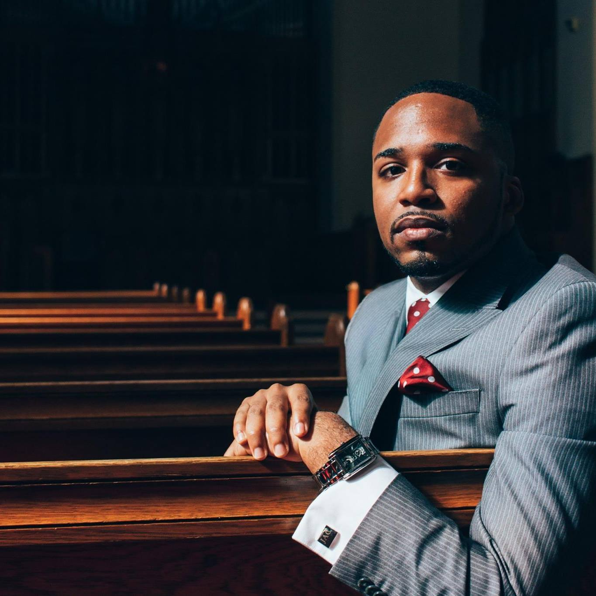

Meet the Pastor
 The Reverend Julian Armand Cook is the Senior Pastor of the historic St. Mark Congregational Church, United Church of Christ of Boston, MA. Founded in 1895, St. Mark is the city’s oldest Black Congregational Church. A native of Chicago, Illinois, Rev. Cook graduated with honors from Houghton College in 2013, where he majored in Music and Biblical Studies and minored in African American Studies. In April of 2013, Rev. Cook was named to “Who’s Who Among Students in American Universities and Colleges.” He is an ordained Baptist minister, and a sought-after preacher, teacher, lecturer, conference presenter, and public thinker.
Rev. Cook is a classically trained baritone vocalist whose gifts have afforded him a number of opportunities, including performing for notable figures like Rev. Jesse L. Jackson and Congressman John Lewis. In May 2009, Rev. Cook was named a U.S. Presidential Scholar of the Arts by President Barack Obama – the nation’s highest honor that can be awarded pre-collegiate artists. As a result, he debuted in concert at the John F. Kennedy Center for the Performing Arts in Washington, D.C.
In May of 2016, Rev. Cook graduated with a Masters of Divinity (magna cum laude) from Boston University (BU) School of Theology, where he was awarded a full scholarship as a Dean’s Fellow and Mary McLeod Bethune Scholar. At the time of his graduation, he was inducted into BU School of Theology’s prestigious Student Leadership Society, an honors society committed to recognizing theology students who have demonstrated excellence in scholarship, leadership ability, and commitment to BU’s legacy of prophetic social engagement. Additionally, Cook was the recipient of the Charles Kenosian Memorial Endowed Scholarship and the Ralph K. and June E. Shunk Prize. He also served as Research Assistant and Teaching Fellow to Dr. Walter Earl Fluker, a renowned social ethicist and scholar on the lives of Dr. Martin Luther King, Jr. and Howard Thurman. As Dr. Fluker’s assistant, Cook aided in the completion of three major works: Volumes 4 and 5 of the Papers of Howard Washington Thurman and The Ground is Shifting: The Future of the Black Church in Post-Racial America. Most recently, Cook was appointed Assistant Director of Thurman Networks at Boston University’s Howard Thurman Center for Common Ground - a student center committed to promoting Thurman’s principles of the “search for common ground” and the “unity of all people.” He looks forward to pursuing doctoral study in Social Ethics, and is deeply committed to the liberating message and ministry of Jesus.
History
The Saint Mark Congregational Church began in 1895 with over 600 Afro-American people assembled in the Berkeley Temple at the corner of Warren Avenue and Berkeley Streets. They voted to name their new church the William Lloyd Garrison Memorial Congregational Church in honor of the great, white, anti-slavery leader. In October, 1895, the church was official recognized by the governing body of the Congregational Church at the Shawmut Congregational Church. Their original name voted on three months earlier had been changed to Saint Mark Congregational and Rev. Peter Stanford, D.D., of England, became the first pastor.
During the beginnings of their church hood, Saint Mark members shared a space at the Berkeley Temple with white Congregationalists. They were allowed to worship for afternoon and evening services only. In 1897, Saint Mark moved from the Berkeley Temple to a rented hall on Lenox Street. After the move, however, Rev. Stanford left to pastor in New York City and membership to the Church dropped, and when the space on Lenox Street was lost, membership scattered.
Despite the years with no pastor, a Sunday School was established with the help of a Boston University theology student, Samuel A. Brown. The Sunday School grew rapidly and services for worship soon resumed in a hall at Northampton and Washington Streets. There was an interim pastor who stayed for less than a year which caused another period of low membership. By 1898 there were less than twelve members.
In 1899 Rev. Samuel Brown, graduate of Boston University, was named pastor and served Saint Mark for twenty two years. With Rev. Brown, the congregation rented space in Chickering Hall at the corner of Northampton and Washington Streets and then moved to 1042 Tremont Street where it stayed until 1919. At the Tremont Street location, Saint Mark’s membership rose, they raised funds for their congregational, and made a name for themselves. In 1913, church members voted to form a corporation and in 1914 the Commonwealth of Massachusetts issued them a corporate charter.
Saint Marks also contributed to the advancement of the greater Boston community by offering the famed Saint Mark Musical and Literacy Union which met every Sunday afternoon beginning in the spring of 1902 on Tremont Street. In the same year, Saint Marks offered a Sunday School programmed that raised membership by 133. In 1909, the St. Mark Institute was formed to offer young people music, sewing, and physical culture. Church life was very centered on the youth.
In 1919, Rev. Brown moved to Ohio and was succeeded by Rev. Clifford L. Miller. In addition to a new pastor, a new church location was needed too. The owners of the Tremont Street location decided to sell the property. The congregational purchased a house at 533 Massachusetts Avenue, but they knew that it would not be permanent. On October 1926, with a membership of about 75, St. Mark Church sold its Massachusetts Avenue building and moved to its present site at 200 Townsend Street.
Soon after moving into the new location, Rev. Miller retired, sending them another string of pastors. During this time, much remodeling was occurring to remove the Quaker tradition to a more suitable image for the Church. In October of 1928 Rev. Samuel Leroy Laviscount began his ministry in the Church. The Church contributed largely to the development of the Roxbury community in the 1930s and as the black population in Roxbury rose, St. Mark set up community centers for children and adults. In 1934, St. Mark sponsored the first black Cub Pack of the Boy Scouts of America. Social programs caused membership to skyrocket and by 1959 membership stood at around 400.
October 18, 1961, Rev. George Thomas was installed after Rev. Laviscount retired. Immediately he was faced with massive urban renewal projects and the church was about to lose its home, Social Center, and Gymnasium. The Church decided to raise money for a new home and they also decided to raise money to build a new housing complex for moderately income families. They were one of the first organizations in Boston to take up such a challenge. In 1963, Marksdale Gardens, and 82-apartment complex sponsored by the Saint Mark Development Corporation was dedicated.
In 1962, however, the Church was notified by the Boston Redevelopment Authority that their building was to be taken by the right of eminent domain. In 1964 members rallied and voted to build a new Saint Mark on the same site. After fundraising, they were able to purchase the site back in 1968 and by 1969, the new church building was dedicated and worship services began. In the same year, Rev. Crispin Mazobere, doctoral student at Boston University, agreed to serve as interim pastor while Rev. George went to serve the Congregational Conference.
During Rev. Mazobere’s time, Bible classes were established along with counseling, a servicing program at Norfolk Prison, women’s groups, and a Women’s day program before resigning in 1976. In 1977 Rev. Jonathan N. Robinson was called to be the next pastor. The church has a long history of social and community programs including: clubs, groups, Ebony Fashion Fair, choirs, Flower Club, Missionary Guild, Angola Club, and the Arawaks.
Our Mission
We will achieve our mission by accomplishing these goals:
- Relearning our sacred story and reclaiming our unique calling.
- Reaffirming our identity as a United Church of Christ church, rooted in the cultural expression of the black worship experience.
- Reigniting our passion for community engagement.
- Reinvesting our financial resources.
- Renewing our unity as a congregation.
Our Team
Pastor - Rev. Julian Armand Cook MDiv
Diaconate Ministry - Deacon Willie Ware
Diaconate Ministry - Deacon Jane M. Weston
Trustee Ministry - Sister Minnie B. Clark
Church Treasurer - Deacon Dawn Simpson
Minister of Music - Brother Adam Littlejohn, Jr.
Admin. Asst. to the Pastor - Sister Geauanne M. Hill
Director of Marketing and Comm. - Sister Victoria Olakojo
Church Clerk - Brother Joseph S. Collins